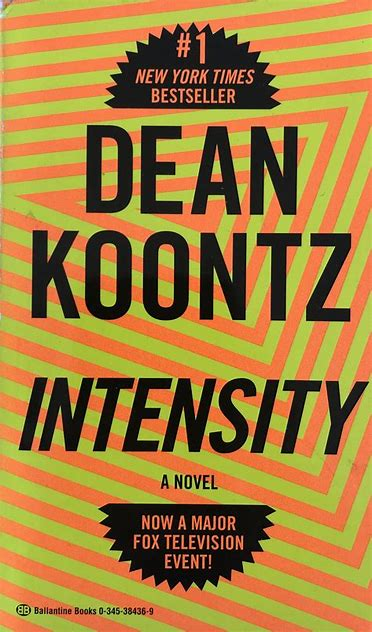

Welcome to "Interesting....". I have a few things that I really enjoy doing or that I am interested in. Throughout this page I am mentioning some of my hobbies and such. There are some more "Interesting...." topics in the navigation bar at the top of the page. On this page you will find sections on my basic hobbies and interests. That includes my animals, my favorite music, books, places to eat and movies.
Slick the Kitty!
I love to go bowling! I am not very good at bowling, but I do love playing ever so often. My mom and I like to hit up Main Event every few months for a couple of hours of professional style bowling. Also, whenever my friends are in town we like to play as well.
Restaurants
These are a few of my favorite restaurants. We have the Olive Garden, which is italian. Their salads are one of their signature dishes, which come with endless breadsticks. I always have cheese ravioli as my entree. Then we have a couple of excellent steak houses. Rafferty's and Columbia's are two of the best steak houses around Kentucky and I would reccomend to anyone around here to try them out. I think there are many Rafferty's locations across the United States, but Columbia's is exclusive to the Lexington area.
Golfing
I started golfing at around age 12 and played a lot throughout middle and high school, but since then have not played much. But that does not make me love the sport any less. I enjoy it because it is a relaxing and social, yet challenging and strategic game. I have played at several nice courses around the area. is very nice, especially if you are looking for a long course.
Good Reading Materials

I also love to read in my spare time. I enjoy thriller, horror, and mystery genres. My favorite authors are Dean Koontz and Stephen King.
Linkin Park
Linkin Park came on the scene when I was in high school. I had just purchased my first car, a red Toyota Celica, which I equipped with three 10" subs and a very nice amp. You can't even imagine the sound that this audio system produced! It was incredible! Rap and hip-hop songs, which put out the most bass, was what this system was designed for and it sounded great. I remember, specifically, bumping Nelly as my friends and I were approaching the school parking lot in the mornings. Even though I really did appreciate rap, my most favorite music genre was rock, pop-rock, or alternative. During that time, and up until recent years, there was nobody better the Linkin Park, or LP for short. I remember the song, "Crawling" as one of their most famous first releases. LP rocked! Nobody was better at rocking a crowd than them. And they continued to be the best of rock up until a few years ago when their lead singer, Chester Bennington, commited suicide. I absolutely loved their music so this was very sad for me, and what hurt me worse was that I had never seen them in concert. They have just, in the last year, attempted to replace him in the band, wich didn't sound terrible, but the could never be as good as they were with him. Here are a few pictures of them as they were a very big interest of mine over the years and a big inspiration!
Amazing Destinations
Another great interest of mine is traveling! Their are so many place I would love to see in this lifetime. In this section I will eventually attempt to add pages and links to different places I have been to or want to go to. For now, I will just talk a little about the places that I have been to.
Within the United States, I have mostly traveled over the southeast states.
Destinations Explored
Chicago
Indianapolis
St. Louis
Memphis
Atlanta
Orlando
Myrtle Beach
Asheville
Gatlinburg
Lexington
Louisville
Cincinnati
Nashville
Knoxville
Panama City Beach
Coacoa Beach
Huntsville
Washingto D.C.
Overseas Explored
London
Paris
Amsterdam
The Wildcats
The University of Kentucky Wildcats are an excellent team and most favorite basketball team. They just got kicked out of the March Madness Tournament last night which was depressing, but we will try again next year. They have won the tournament several times over the years so they are a team that stands out to many. The Louisville Cardinals are also a well-known team here in Kentucky. I also root for them but they are not my favorite. Also, I attended University of Kentucky College which was a great experience.